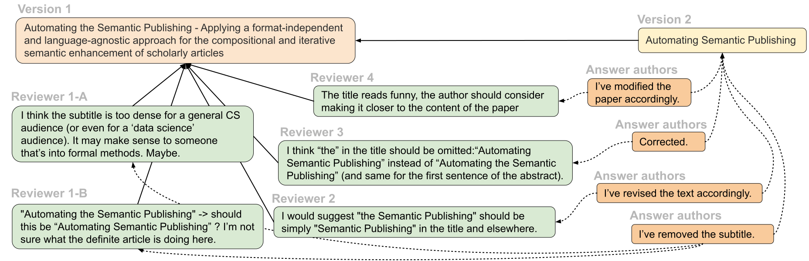
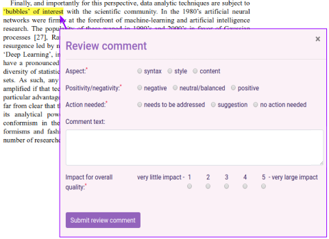
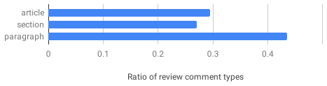
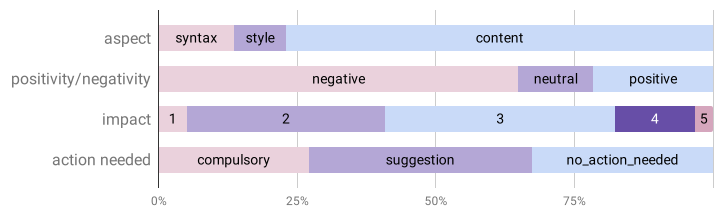
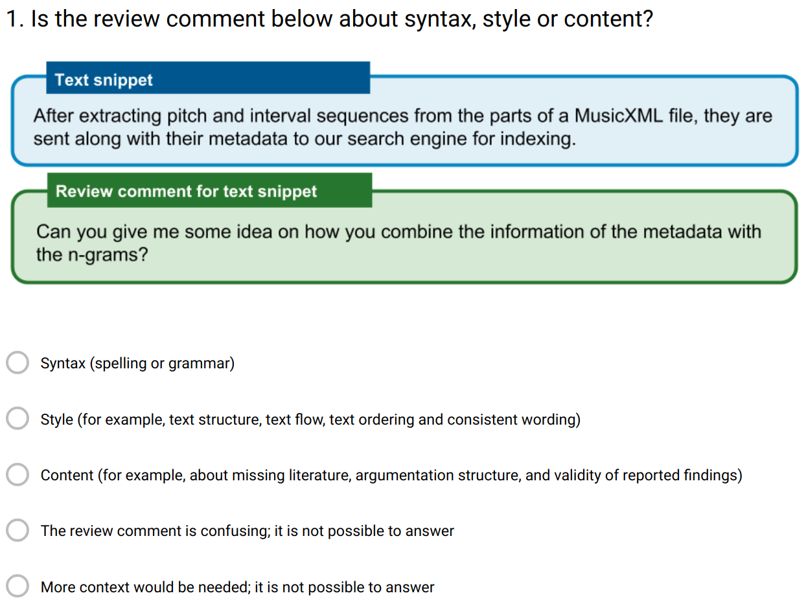
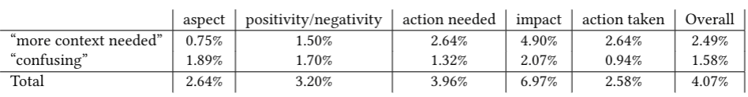
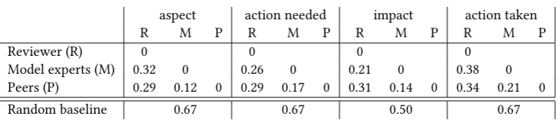
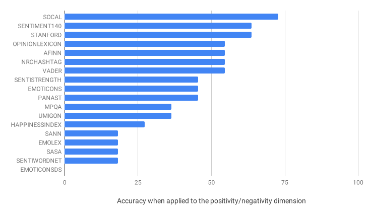
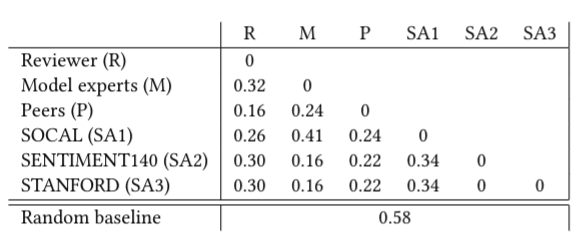
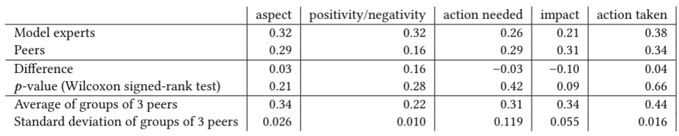

Peer Reviewing Revisited: Assessing Research with Interlinked Semantic Comments
Cristina-Iulia Bucur1 , Tobias Kuhn2 , Davide Ceolin 3 1, 2 Vrije Universiteit Amsterdam, 3 Centrum Wiskunde&Informatika (CWI)
21th November 2019
These slides: https://tinyurl.com/Linkflows-K-CAP-21-Nov-2019
Scientific publishing: still in the Middle Ages?
- Scientific publishing and peer reviews: communicating and assessing research
- Large bulk of text in natural language: coarse-grained structures in which scientific contributions are communicated
- Articles: digitized and maybe semantically enriched
How to keep up?
- It takes time to stay up to date!
- ~20 hours/week for epidemiologists (2004)
- 2000 papers/day in PubMed (2018)
- 4-5%/year increase in number of scientists
Quality of research: peer reviewing!
- Takes a lot amount of time
- Lack of transparency
- Lack of software integration
- Lack of attribution for reviewers
A model of the processes of fine-grained reviews
Research question
Can an approach for scientific publishing based on a fine-grained semantic model help to make reviewing better structured and more accurate?Reviews can be made more structured and precise
Dimensions of the model for review comments
- Aspects: whether the review comment is about syntax, style or content
- Positivity/Negativity: whether a negative, neutral, balanced or positive comment was pointed out by the reviewer
- Action needed: the action that needs to be taken by the author(s) of the text snippet according to the reviewer
- Overall impact on quality: the impact of the point raised in the review comment on the overall quality of the article according to the reviewer
Linkflows model for reviewing
Evaluation of the Linkflows model
- Applied model: descriptive results on a small case study
- Questionnaire-based comparison
- Original peer-reviewer: establish ground-truth for model dimensions
- Model experts: rate snippets according to model dimensions
- Peers: how they compare with model experts and original reviewers
- Can it be automated to a certain extent: sentiment analysis
Selected datasets
- Recent publications with open peer-reviews
- Journals and conferences in the Computer Science field
- Articles and reviews selected randomly
| Data Science Journal 2017-2018 | Semantic Web Journal 2018 | PeerJ CS Journal 2018 | Openreview.net 2018 | ||||||
|---|---|---|---|---|---|---|---|---|---|
| ISWC-DeSemWeb | ISMIR-WoRMS | ||||||||
| Total | Selected | Total | Selected | Total | Selected | Total | Selected | Total | Selected |
| 13 | 7 | 38 | 7 | 26 | 7 | 10 | 7 | 11 | 7 |
Evaluation of the Linkflows model
- Applied model: 35 papers, 421 review comments
- Questionnaire-based comparison
- Original peer-reviewer: 11 review comments (ground-truth)
- Model experts: 415 review comments (articles in ground-truth)
- Peers: 79 answers in total
- Sentiment analysis: 18 methods
Most review comments target paragraphs: fine-grained reviewing makes sense!
Applying Linkflows model for reviewing to papers
Can the interpretation of model experts or peers match the one of the original peer reviewer?
The dimensions of the Linkflows model are well understood and easy to apply
Model experts and peers partly agree with the original reviewer
Sentiment Analysis methods perform far from perfect
Peers perform much better than model experts and sentiment analysis tools
Model experts do not perform significantly better than peers and there is a wisdom of the crowd effect
Future work
- Implementation of Linkflows model for reviewing
- Apply model and embed it in the reviewing process
- Connect nanopublications to model
- Tool that helps editors, reviewers and authors